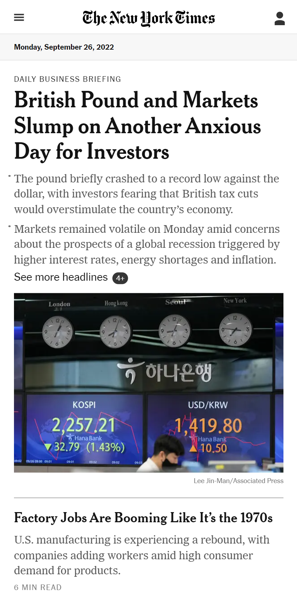

Clean Design
Tesla
Tesla's website makes a good use of whitespace which simplifies the design. The user is only presented with the options they need and no more. The aspect of the site is not loaded and easy to the eyes which facilitates navigation.
The clean design focuses the user's attention in the pictures of the cars. The whole view is always centered in the car across all screen sizes. The whole point of the layout is to highlight the product and how to obtain it.
Contrast
The New York Times
The contrast in this example can be found between the headings and the content below it. The New Tork Times logo has a distinct typography that contrast with all the other text which has an easier to read, more normal typeface. At the same time, there is a marked difference between the font weight of the news titles and their body.
The contrast in both cases is employed to highlight and draw the user's attention. It also makes it easier to browse through the headlines.
Visual Hierarchy
MDN Web Docs

We can find an example of visual hierarchy in the search bar of this website, which appears prominently and is displayed at the very center of the page. It's size seems almost as big as the main heading, which highlights its importance in the website.
This site is mostly used as reference documentation on various web development topics, mainly frontend development. Because of that, the search bar feature is highly utilized and has a high level of importance, hence its size.